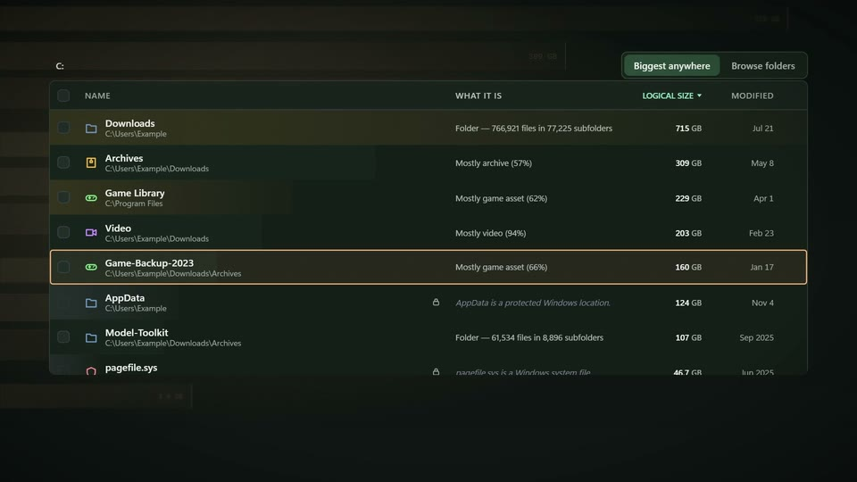
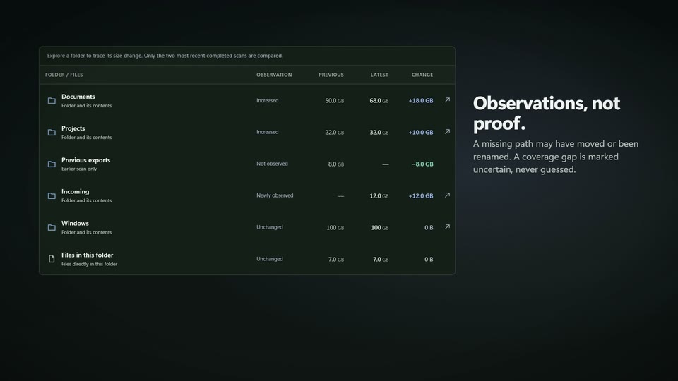
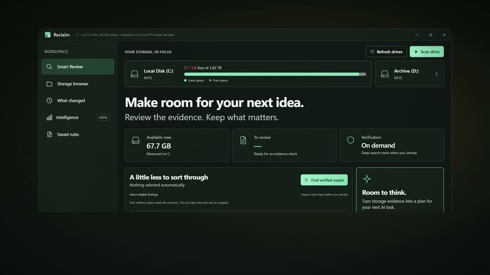
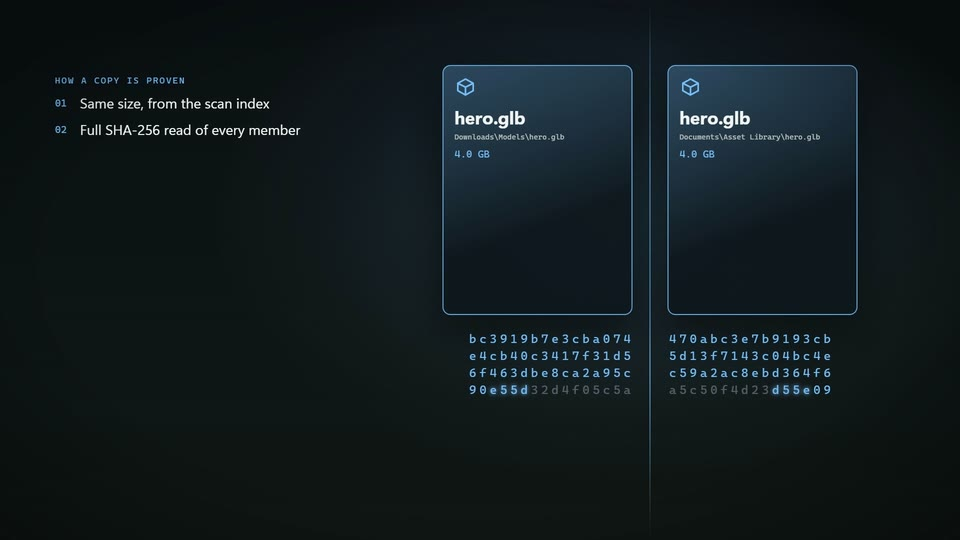
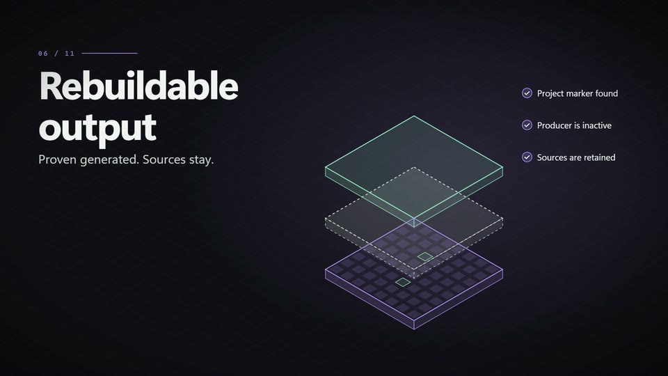
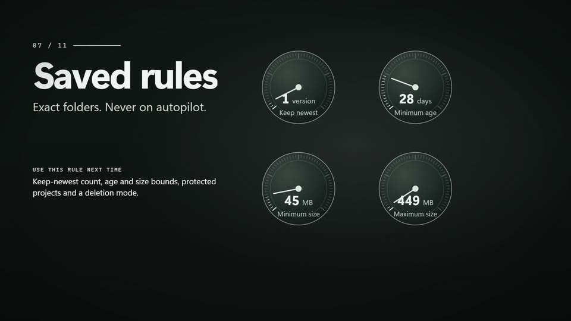
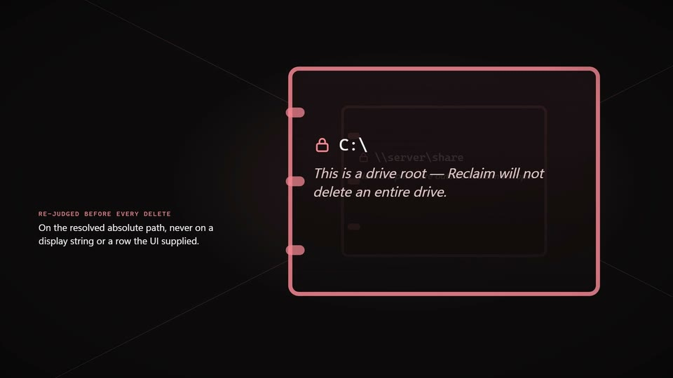
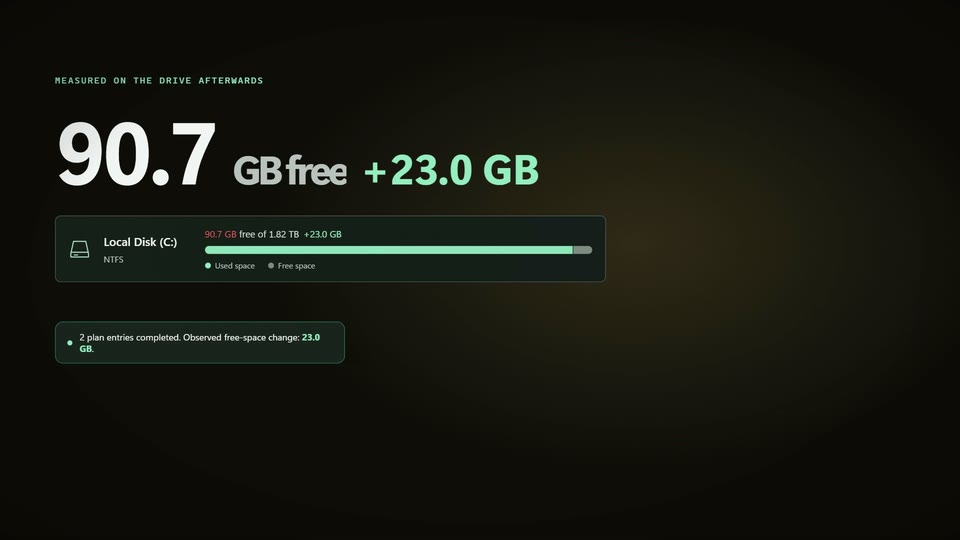
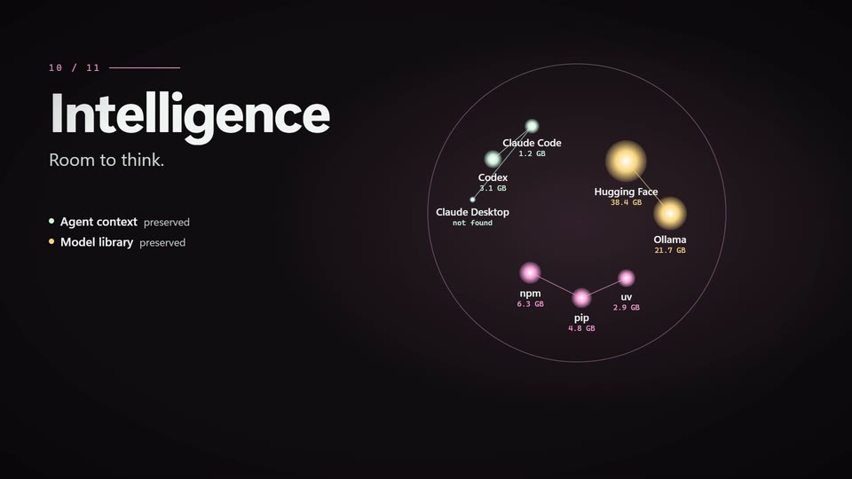
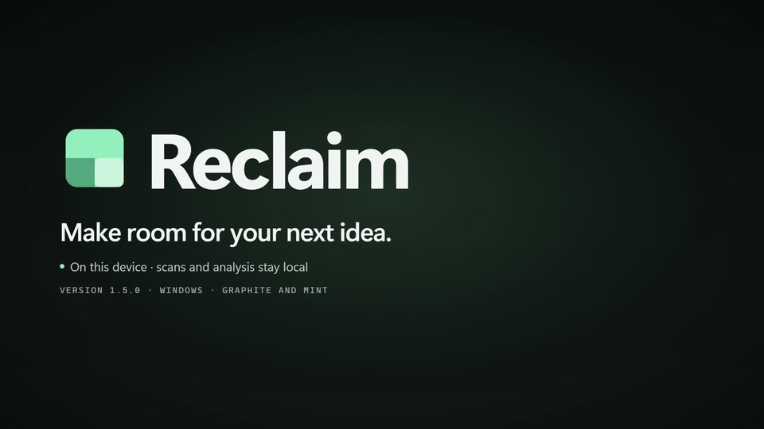

A whole drive in seconds.
Reclaim reads the NTFS master file table directly, then rolls every size up the folder tree.
Reclaim reads the NTFS master file table directly, then rolls every size up the folder tree.
A 165-second tour of Reclaim 1.5.0 for Windows: direct file-table scans, evidence-first cleanup, verified copies, sealed plans and local AI-storage planning, rebuilt from the real graphite and mint interface.
Reclaim reads the NTFS master file table directly, then rolls every size up the folder tree.

Biggest anywhere ranks the drive, says what each item is and passes through protected parents.

Two saved scans are compared folder by folder, and uncertain results are marked as uncertain.

Smart Review builds an explained shortlist in three groups and selects nothing for you.

Copies are proven with full SHA-256 reads, hardlinks are not counted, and you choose the keeper.

Generated output qualifies only with producer, scope and source evidence; unexpected files stay.

A saved rule covers one recipe and one exact folder, starts off and never runs on its own.

Every path is judged again on its resolved location before deletion, and system areas stay locked.

Selections become an immutable plan that rechecks each file, keeps a journal and measures free space.

A local, read-only inventory of AI-tool storage and a headroom plan for your next job.

One graphite and mint workspace, where scans and analysis stay on your PC.